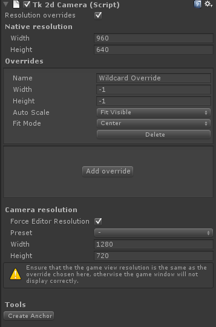
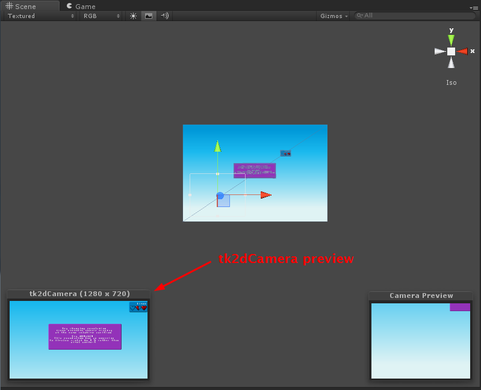

Documentation
Script Reference
Forum
Documentation
Script Reference
Forum
One world unit in tk2dCamera is 1 pixel unless overriden.

The tk2dCamera always tries to display pixel perfect at any resolution. If your source background is 960x480, for instance, and your target resolution is 480x320, you will be viewing a zoomed in section of the background. A resolution override can be set to make the camera scale the output down by 0.5x, thus fitting the 960x480 background in the 480x320 screen.
Native Resolution - 2D Toolkit needs to know at what resolution your artwork is meant to be pixel perfect. Enter the resolution you authored for here.
Overrides - Add overrides to override for a specific resolution, or use wildcards. -1 in a dimension will match any resolution. An override of 480x-1 will match 480x640, 480x960 and indeed 480 x anything. Overrides are processed in order so any match early on will be used. You can use this to your advantage by having specific resolution overrides, and a "Catch all" wildcard resolution at the end to handle all possible resolutions elegantly. When you click "Add override", you'll get a wildcard resolution matching anything.
Override name - Name your resolution overrides in the event you have many of them.
Override width and height - Resolution to match for this override. Set to -1 to match any dimension in that axis. Set both to -1 to match any resolution.
Auto Scale None - You specify an explicit scale Fit width - The camera will attempt to fit the width. The camera might overflow vertically. Fit height - The camera will fit the height. The camera might overflow horizontally. Fit visible - Fit the larger axis. The entire image (based on native resolution) will always be visible.
Fit Mode Constant - You specify an explict amount to offset from the bottom left. Center - The camera will automatically center the screen. You may need to letterbox.
Force Editor Resolution - Forces a particular resolution in the editor. The game window should be set to the same resolution, otherwise the game window output could be rendered incorrectly.
Preset / Width / Height - Pick from a preset resolution, or enter your own custom resolution. This will be resolution simulated. If your game window is set to the same resolution, and is big enough that the viewport isn't compressed, the output will be pixel perfect. The tk2dCamera preview window will display in this resolution.
Due to a bug in Unity, the Camera preview is incorrect. Use the tk2dCamera preview window instead the Unity one for an accurate representation of what you'll see when running on target. The game window output should be correct, as long as you set the correct resolution. You can collapse the camera component to hide the Unity preview window.
